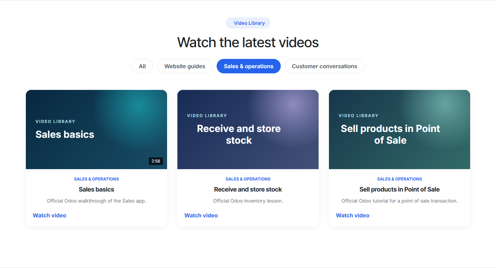

ERPCloud Video Library
Turn scattered YouTube links into a useful learning library on your Odoo 20 Community website.
Organize videos by topic, highlight important lessons and help visitors find the right tutorial without leaving your site first.
Included
- Video records with categories, tags and featured status
- YouTube URL validation and a branded thumbnail fallback
- Responsive standalone page and website snippet
- Category filters for browsing a larger collection
See it in use on Odoo 20
The screenshots use six official Odoo tutorial links in a disposable QA database. A normal installation adds no sample videos. Video titles and categories are illustrative.



Get started
Install the module, add your YouTube links, choose categories and publish. Visitors can browse at /video-library. Requires the standard Website, Mail and Portal apps.
Free · LGPL-3 · Support: info@erpcloud.vn